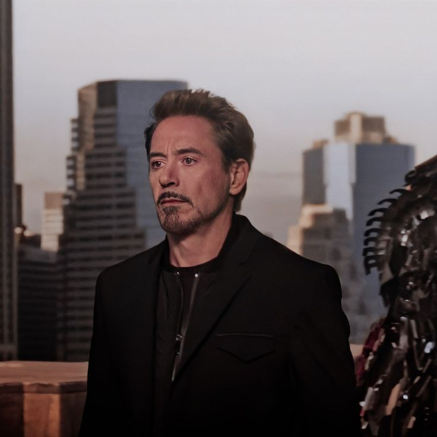

Команда лидеров
Гении, визионеры и пионеры, определяющие будущее технологий

Тони Старк
Генеральный директор и Главный технолог
Гений, миллиардер, плейбой, филантроп. Выпускник MIT в 17 лет. Изобретатель брони Железного человека и технологии ARC реактора.
156+ патентов
3 нобелевские премии
Основатель Мстителей
Вирджиния "Пеппер" Поттс
Президент компании
Бывший личный ассистент Тони Старка, сейчас управляет операционной деятельностью компании. Окончила Гарвардскую школу бизнеса.
CEO Stark Industries
Спасение Мстителей
Гарольд "Хэппи" Хоган
Глава безопасности
Бывший боксер и личный водитель Тони Старка. Отвечает за безопасность всех объектов Stark Industries по всему миру.
Бывший боксер
Глава безопасности